- Cannonball: I managed to create a client profile which allowed me to start creating a mood board plan of ideas for which they might like. I then decided to make a form which contain research on who my audience is. After I found out they wanted a cannon I decided to create a second mood board which will allow me to have a deeper idea of what I am creating. This is good as it allows references and to understand what I am making better. As well as started to write my research and plan. This was an easy week and was able to do in 1 - 2 days. I also performed my primary research to find out more on who my audience is. I wanted to draft both my planning and research this is because I didn’t manage to achieve this goal, but I made a solid start.
- Gunpowder: I started looking for a cannon blueprint which would allow me to see the different parts of the cannon in more detail. After researching a while I managed to find one which showed the parts and what I was aiming to model. I then inserted it into blender and managed and started modelling which you can find in the production section. As well as I finished my research and plan. But this is still an early version of it and will need to be rewritten. I wanted to start the model in this week but failed as the typing took longer than I thought it would.
- Vent: This is when I started my first attempt but it wasn't good and that I had to redo it this set me back however, the new method made it quick and easy to catch up therefore, I didn't fall behind as much as I thought I would have this means that I was on schedule for my deadline. I wanted to start the model in this week and did however, due to the first attempt failing I had less time on my second attempt.
Plan
I created a mood board because I need to brainstorm some ideas for what model I should make. These were my ideas which I thought of. I also decided to use a range of references and different styles to pick which one I thought would be best to do for the Unit.
Why didn’t I choose the other models?
- Spaceship - I didn't chose to model a spaceship this is because it can prove difficult this is because you can make it as easy or hard as you like. From low poly to si-fi which can change the difficulty by a lot therefore, that would be too much to concider. With a limited deadline I thought that I should not do this.
- Car - I didn't chose to model a car this is because I would of ended up over complicating things and picking the correct car model would be hard and also choosing a style (low poly, realistic or anime). This would overwealm me therefore, I didn't pick this.
- Guns - I didn't model a gun this is because I think that a gun would be fun to model however, can be complicated depending on the style and gun itself. I also didn't want to do a gun because I thought that they look too plain if not enough detail is done and I could get side tracked. Due to wanting to add more detail to it. But, this could have been a good model to do this is because I could have used my Airsoft rifle as a first hand reference allowing me to add more detail to it.
- Ship - From low poly to high poly which can change the difficulty by a lot therefore, that would be too much to concider. However, if I break the model down I and focus on one part of trhe ship such as the cannon this could work. This is because I would be able to add detail and not get overwhelmed by modelling the entire ship.
Why I choose the cannon?
I decided to do 18th century naval cannons this because I believe that this model could help me with time management and would allow me to meet the deadline. I decided to make it Stylized realism themed because I think it would be fun to try and achieve this style.
I created a second mood board this is because I wanted to get a deeper understanding of what I was modelling. This allows me to use a variety of references to help me understand what I am modelling better.
Time management
- Week 1: I managed to create a client profile which allowed me to start creating a mood board plan of ideas for which they might like. I then decided to make a form which contain research on who my audience is. After I found out they wanted a cannon I decided to create a second mood board which will allow me to have a deeper idea of what I am creating. This is good as it allows references and to understand what I am making better. As well as started to write my research and plan. This was an easy week and was able to do in 1 - 2 days. I also performed my primary research to find out more on who my audience is. I wanted to draft both my planning and research this is because I didn’t manage to achieve this goal, but I made a solid start.
- Week 2: I started looking for a cannon blueprint which would allow me to see the different parts of the cannon in more detail. After researching a while I managed to find one which showed the parts and what I was aiming to model. I then inserted it into blender and managed and started modelling which you can find in the production section. As well as I finished my research and plan. But this is still an early version of it and will need to be rewritten. I wanted to start the model in this week but failed as the typing took longer than I thought it would.
- Week 3: This is when I started my first attempt but it wasn't good and that I had to redo it this set me back however, the new method made it quick and easy to catch up therefore, I didn't fall behind as much as I thought I would have this means that I was on schedule for my deadline. I wanted to start the model in this week and did however, due to the first attempt failing I had less time on my second attempt.
- Week 4: This is when I started writing the reflection and rendering this is because the rendering did not take long and I knew already what I needed to work more on with the final week fast approaching I had to make a few shortcuts which then effected the quality of my model which I could have improved on. There was no goal set accept from making improvements to the typing stage.
- Week 5: This is the week when I decided to make sure that I covered all the work for the assessment this therefore, this was a mostly a typing week. So not much progress was made. However, I did quickly add some new features in the models however, hard to tell the difference. If I had more time, I could have fixed some of the materials and more details. My goal was making the model slightly better and improving the typing as this is an area which I strongly lack.
Why I choose the cannon?
My client is a game designer who needs a cannon model for his upcoming 18th century naval game that will have a stylized realism aesthetic but would like 2 coloured renders and 2 clay renders as a wat to showcase their game. I am aiming to do a mid poly build which allows me to get a good amount of detail but not at the cost of more geometry than needed. For my requirements I would need to make sure that I stay with quads and avoid n-gons this is because in game engines such as Unreal Engine and Unity they triangulate the mesh. It also helps in future proofing the model this is because people can do animations easier. This means a large variety of people will be using this model such as the game developer and their team this means I will have to bear that in mind as I will need to make sure the topology is good.
The cannon will be placed upon a ship and can be animated with recoil and aiming allowing a better experience for the player. It will also be used for rendering this is because they want to include a sneak-peak towards their small indie company. This will be useful for the client as it is an important part of the game as it is a core mechanics. They will be using Unreal Engine 5 for this game and therefore, tris are not something to worry about unlike if it was Roblox Studio.
Research
Primary
I asked questions to help me understand my audience better. Such as whether they are interested in naval games if so which ones. I saw that most of my audience are under 18 with most that like the historic 18th century. 62.5% of people are not into naval combat with one saying they are more of a car guy. I did make a typo in the form it was supposed to say game.
Secondary
For my secondary research I investigated the cannons history to understand the origin of the cannon and how it has evolved. The first use of a cannon was Europe and used between 1343-44. This was in a city called Algeciras.
The age of sail was around 1571–1862, when large wooden ships ruled the seas. Which had a variety of cannons. However, the issues with cannons were that they were heavy and short range therefore, naval tactics was developed around this in mind. To also help get around this they started using brass cannons and was the most used.
Using a cannon was very hard this is because it required a great amount of labour to maintain, fire and reload. The cannon was broken up into 3 main pieces on the inside.
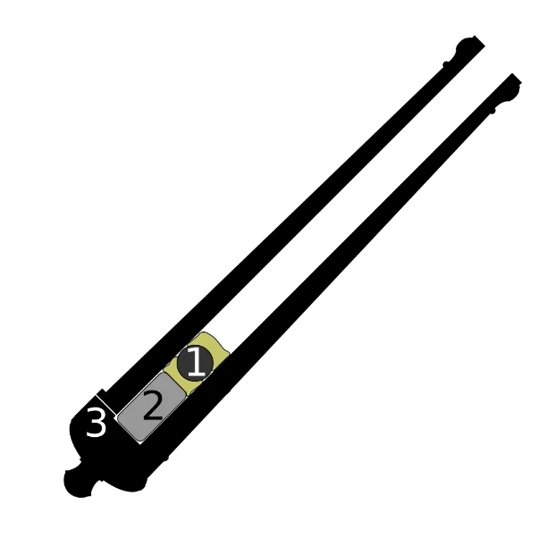
The types of people who would maintain the cannon is those that typically 10–14 years old boys they would have also run to get the gun powered they was called Powder Monkeys. Cannons would also need to be cleaned after each use using a mop.
Cannons varied in sizes this was made in 1712 by Albert Borgard he was British Royal Ordnance.
- 42-pounders (7 in (180 mm))
- 36-pounders (6.7 in (170 mm))
- 32-pounders (6.4 in (160 mm))
- 24-pounders (5.5 in (140 mm))
- 18-pounders (5 in (130 mm))
- 12-pounders (4.7 in (120 mm))
- 8-pounders (4 in (100 mm))
- 6-pounders (3.5 in (89 mm))
Different countries had different pounders and class but followed the same new system as it was easier to classify the cannons. These cannon balls were made from solid spherical cast-iron. There was also different ammunition and different purpose that they could have been used for.
Production
Researching how to model
I think that my techniques was time effective this is because it allowed me to proceed to make a cannon with good clean topology which allowed me to use quads whenever possible and to avoid n-gons. The reason for this is to help it when it gets imported into a game as it would be easy enough to triangulate.
I’ve decided to use the techniques I used because I want to import into Unreal Engine meaning I had to bear in mind the formatting and understanding of Unreal Engine.
Through research I could not find if my method was industry standard however, due to the topology all being quads with no n-gons I think I did very well.
Positives and negatives of rendering using cycles and Evee
Evee:Is a real time rendering engine and is faster than cycles so people can use this to get a rough idea on what it could look like in cycles. This is because it is much lighter than Cycles. But it is not the best for photo realistic renders. This is because it is super inaccurate which often ruin some renders. Evee also does not support all shading nodes; therefore, it is also another limiting factor.
Cycles:This provides the photo realistic renders which allows a lot better accuracy this is because it uses path-based ray tracing. It isn’t the best for performance and is very heavy.
Evee is the better on for cel-shading and stylised lighting and builds which is why I have choosen to do my renders for this. I also choose Evee because it would be quicker to render and better for performance as my PC isn't great at rendering. I could have choosen Cycles if I was going for a more realistic look. I also think that my lighting would be better in Evee than Cycles as Evee isn't realistic therefore, the light is treated in a different way.
Making the model
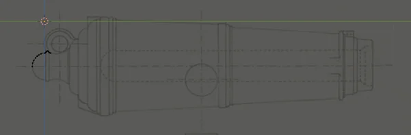
Here I added a cube and merged this gave me a vertex which allowed me to position it just above the mirror line. I then extruded by using ctrl and right click.
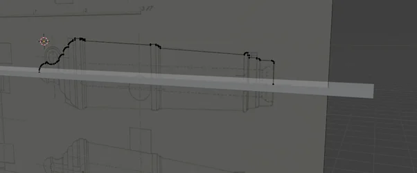
I then finished it and added a plan on the mirror line to allow me to use a mirror modifier.
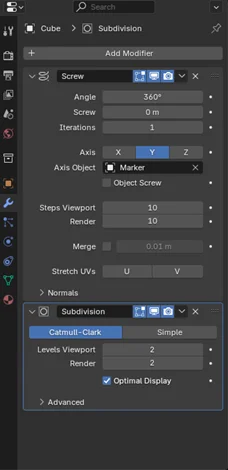
These are the modifiers that I used once I applied the mirror modifier. I added a screw modifier this is because it would create a clockwise shape follow the cannons shape. I added a subdivision this is because it would help smoothen my mesh. This is done by dividing the mesh by 4 but as I applied 2 it will be doing it 8 times giving it that smooth look that I need.
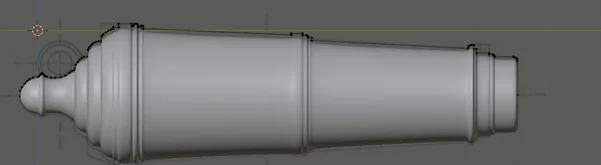
This is the main cannon done now. This overall looks good and that I learned how to use new modifiers which gave me the look I was looking for.
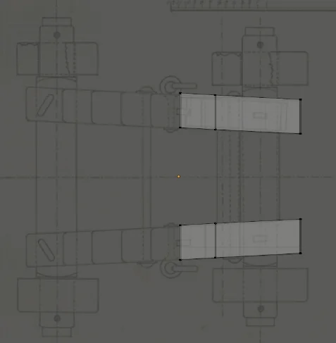
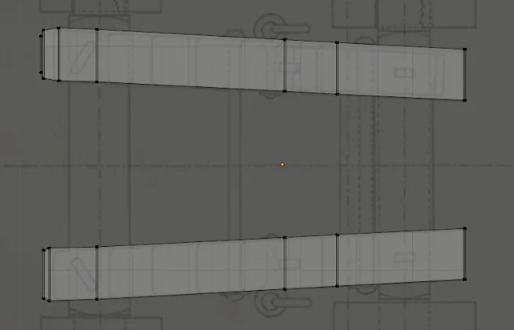
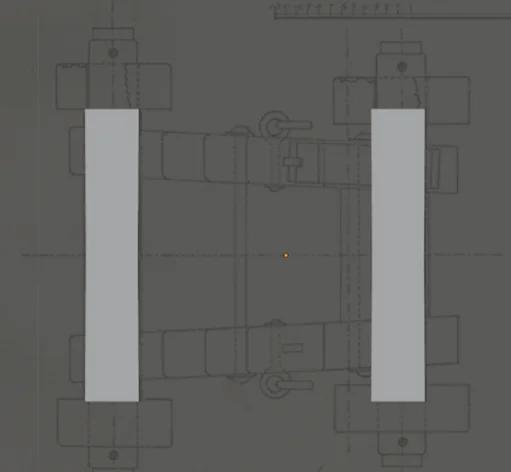
Here I added a cube and used the mirror line mirroring it to the other side. I then positioned the cube and extruded it following the shape of what I am making.
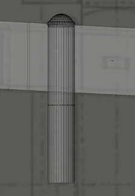
This is when I started to make the bolt. I used a UV sphere and cut half of it allowing me to extrude and make a cylinder for the bottom. On the outer edge I used the extrude along normal which gave it that little bump.
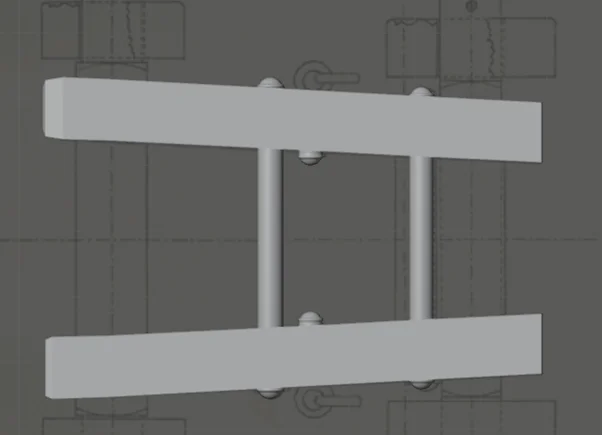
I then repeated this action ad the bolt piece adds significant detail to the base of the cannon.
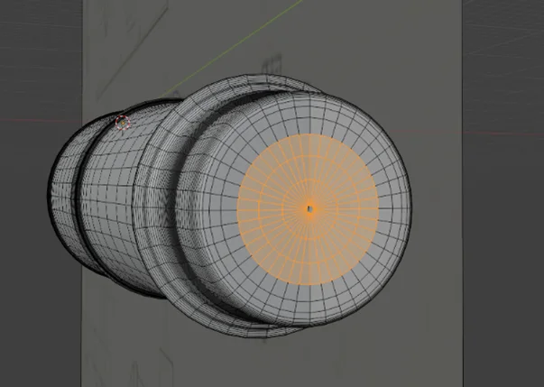
 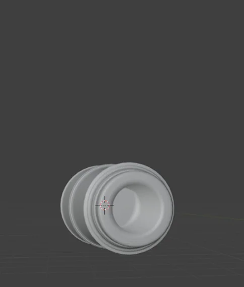
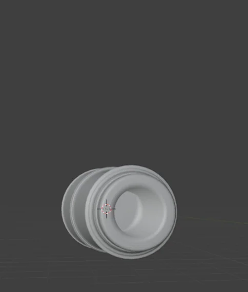
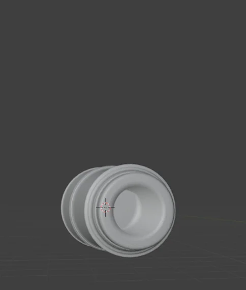
I turned my interest quickly back to the main cannon this is because I noticed that the front of the cannon didn’t look well this is because there was a hole in the centre. To overcome this, I selected certain faces and deleted them then grid filled avoiding n-gons. I then extruded along normal to add the cannon chamber. However, an improvement I could have done is to of followed the plan instead of extruding at a random position.
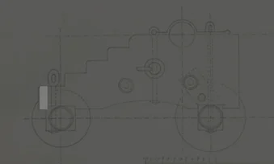
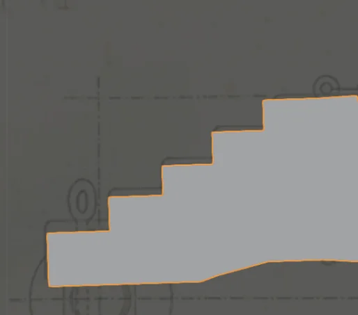
I once again added another cube and extruded it along following the shape of the cannon.
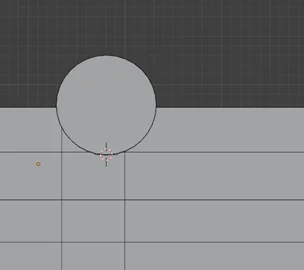
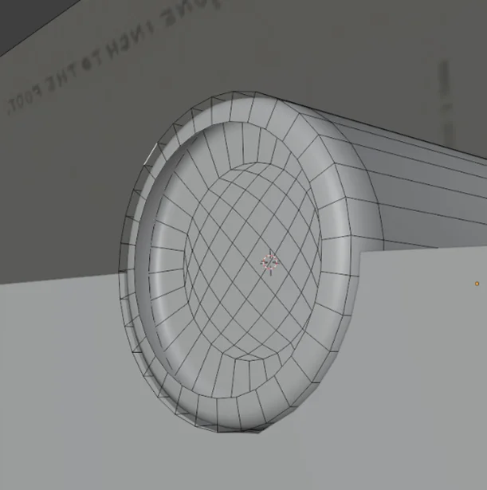
I added a cylinder and inserted the face and extruded along normal. I realised that I had a n-gon and therefore, I deleted it, and grid filled again making sure that my mesh only has quads. As this is the goal.

This is what I have so far, I have some nice bolts on the base of the cannon however, the body still looks plain. As there isn’t much detail
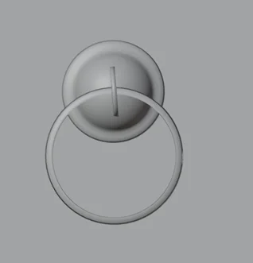
I used the bolt which I made and duplicated it around the cannon. I then created a circle and added a solidly modifier adding thickness and duplicated and rotated the mesh.
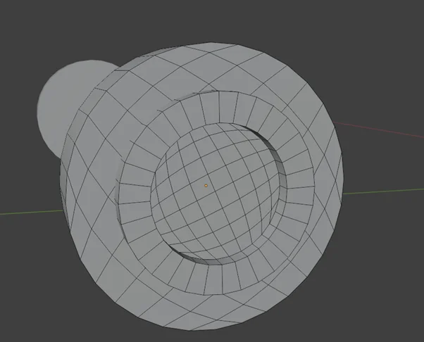
I created wheels this was done by adding a cylinder and inserting the face I then deleted the face on the outer edge making sure the vertices was still there. I then used grid fill, and grid filled the second face. I then selected a certain radius and extruded it to give a thicker rim inside.
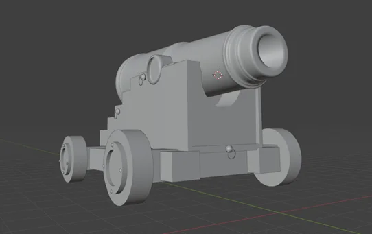
This is the final look at it in object mode. As my time runs shorter to the deadline. I realised that I would have to miss on a few details this is because I am not formula with the shader graph in blender and therefore, I assumed that it would take longer to do that than the details I wanted to add.
Materials
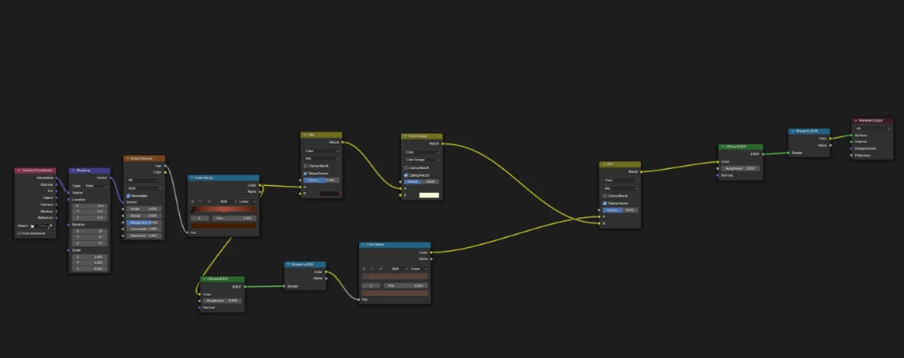
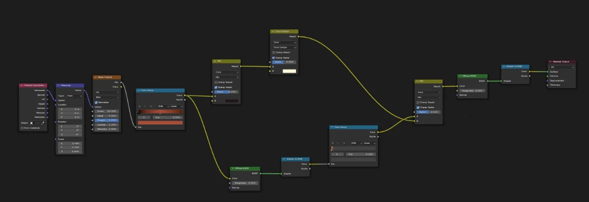
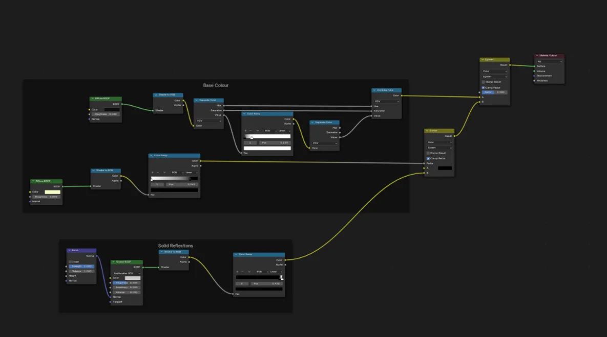
This one was inspired by a little part from Mr_Forke the Basics of Anime in Blender #3.2 - Advanced Anime Wood Textures combined with the cannon material which gave me the wood effect for both wood material 1, 2 and the cannon shading. I decided to have 2 wood materials as wheel would often be a darker variant of the wood. I also did a render.
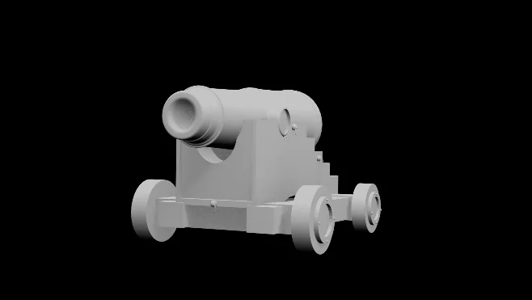


These are my results for clay and materialled renders. This was done in Evee rendering engine and although I think I could have done better with the materials I am proud of what I was able to do and therefore, I like it.
Reflection
I learned to make a cannon in a time effective way with good quality. Using unique methods as I did not see people using the same method as me. I browsed on YouTube and other sources and could not find people who have modelled like the way I did. However, I found a tutorial which could have helped me later if I were to of used it. But I wanted to try and be as independent as I could. This tutorial could have helped me with the cannon base.
Below are the two videos that I mentioned. I believe that I would have benifited from Realistic version because they added more details on the base than I did.

In this attempt I made it near enough as the method mentioned in my. However, I decided to make it using a cylinder for the main part of the cannon and to make the wheels more bulky. This caused the cannon to look sharp and more cubic. I also rushed this cannon which made me to take shortcuts and not care about the model as much as I should have done. On the other hand though it made me try and find alternative ways of making the cannon instead of using a cylinder which lead me to find the screw modifier.
After discussion with friends, family and tutors I discovered that certain things I could have added to the cannon to make it even better these were:
- Adding a better wheel shape
- Adding more details such as fuse or more bolts
- Add scene such as having cannon balls in the sceney
- Wear and tear to add wood grain variation
- Metal imperfections
However, I did get good feedback about the topology and that it was effective method to how my client wanted the cannon. I attempted to add more to the cannon based on the feedback however, did not get time to finish it.

What went well
I think the fact that I did all of it independently was a massive achievement and doing it using my own method. I also enjoyed making the cannon as I used new methods which I have never done before.
Even better if
I could have used a anime theme as this was the orginal idea however, it looked more stylised. I add more details to the model as it is very plane for the base of the cannon. Therefore, next time I will take my time and add details to the cannon. I could have watched a tutorials and understand how they added detail and where mine lacked the most.
References
- Adobe. (n.d.). Firefly. Available at: https://firefly.adobe.com/ [Accessed 2 Nov. 2025].
- Fandom. (n.d.). Artillery - Black Sails Wiki. Available at: https://black-sails.fandom.com/wiki/Artillery [Accessed 2 Nov. 2025].
- Fandom. (n.d.). Sailor Cannons - Sea of Thieves Wiki. Available at: https://seaofthieves.fandom.com/wiki/Sailor_Cannons [Accessed 2 Nov. 2025].
- Pike, J. (2025). World Wide artillery. [online] Globalsecurity.org. Available at: https://www.globalsecurity.org/military/world/artillery-type.htm [Accessed 8 Nov. 2025].
- Wikipedia Contributors (2025). Naval artillery in the Age of Sail. Wikipedia. Available at: https://en.wikipedia.org/wiki/Naval_artillery_in_the_Age_of_Sail.
- scheong (2009). Naval Warfare in the Age of Sail (Pt. II). [online] Throughout History. Available at: https://www.throughouthistory.com/?p=34.
- www.historicnavalfiction.com. (n.d.). Firing a Cannon. [online] Available at: https://www.historicnavalfiction.com/general-hnf-info/naval-facts/firing-a-cannon.
- Chuck (2014). HM Cutter Cheerful 1806 by Chuck - FINISHED - 1:48 scale - kit prototype. [online] Model Ship World™. Available at: https://modelshipworld.com/topic/8131-hm-cutter-cheerful-1806-by-chuck-finished-148-scale-kit-prototype/page/21/.